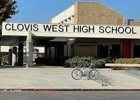
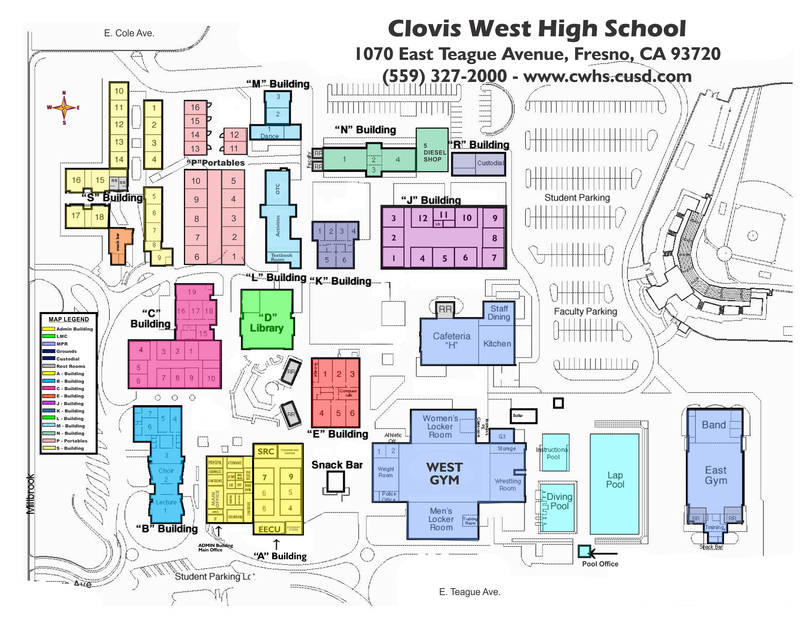
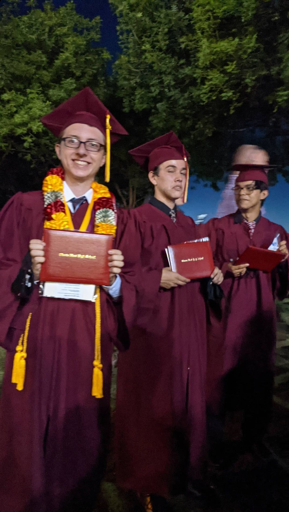
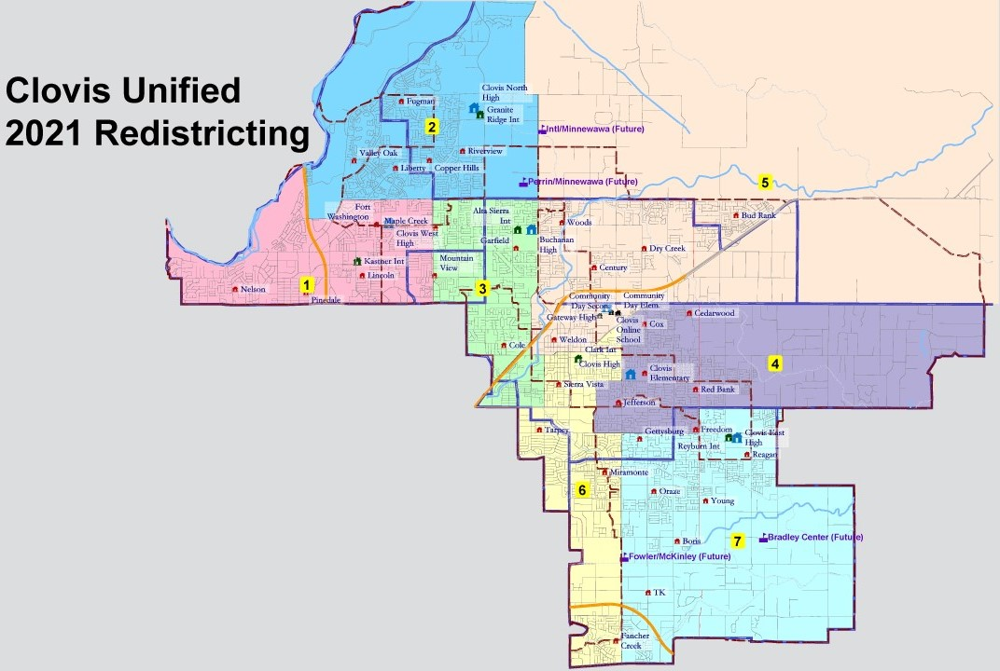
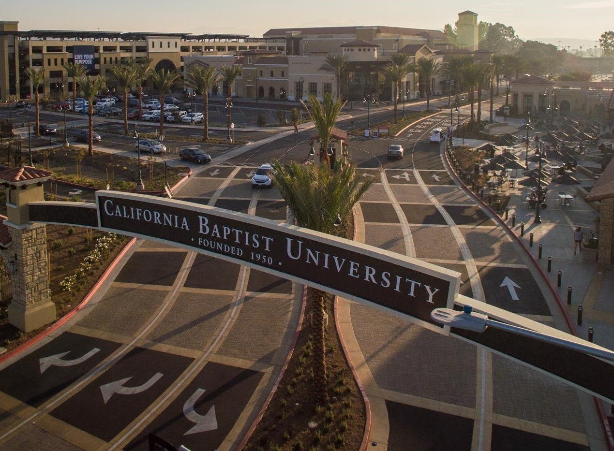
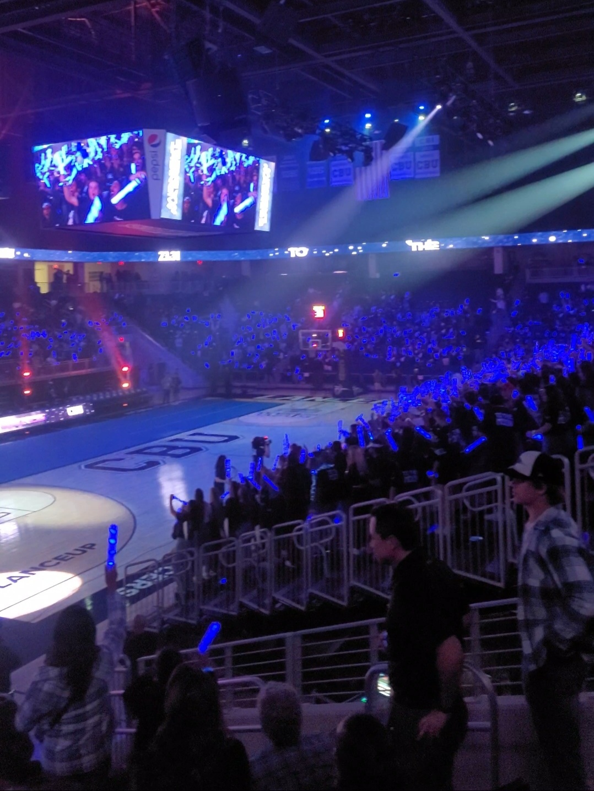
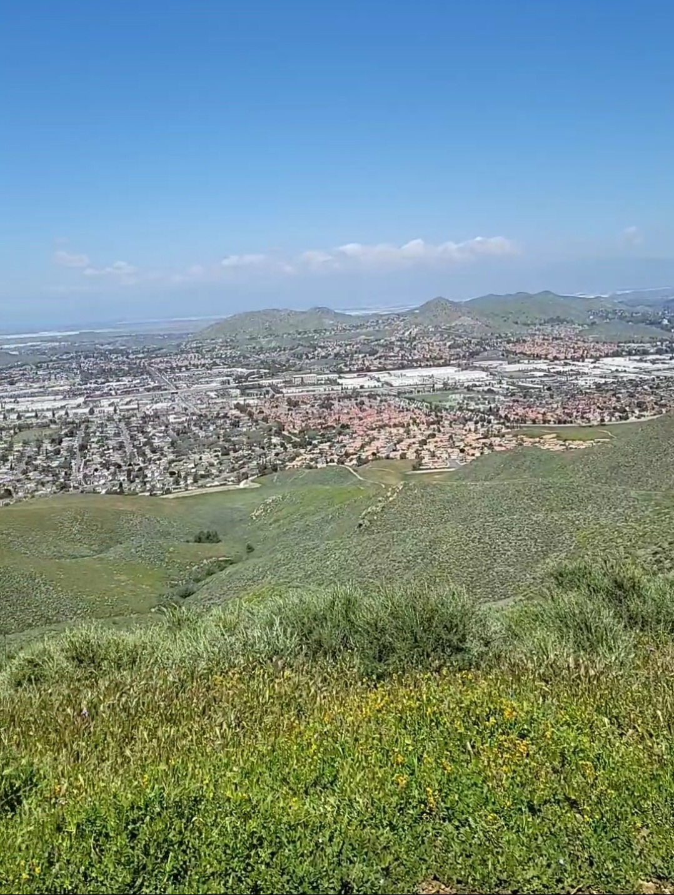
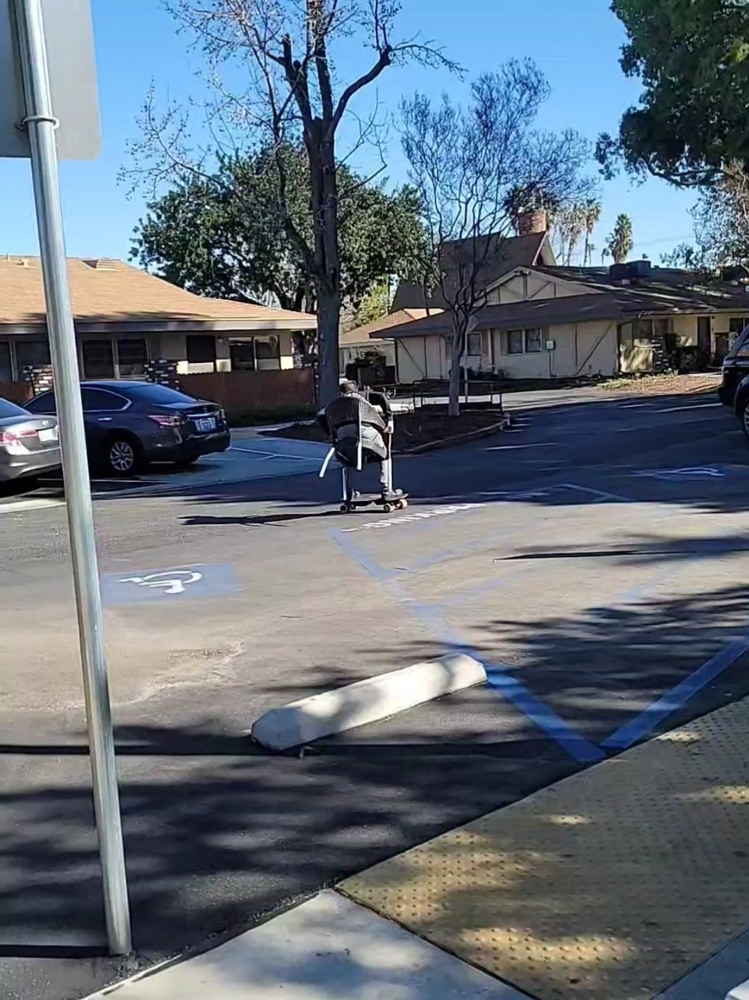

Growing up I attended Clovis West High School in the Clovis Unified School District. Which is where I earned my high school diploma. During my time in high school I also participated in dual enrollment, meaning I also attended Clovis Community College at the same time. During that period I was able to take half of my classes as college courses.



After my time in scouting had come to an end and I had graduated from high school, I decided I wanted to be a computer science major. I was drawn to the major due to my ability to easily pick up on technology, along with the creative problem solving included with programming. It was during that time when I was researching the different engineering schools in California that I learned about CBU. After I found out more about it and was able to tour the campus I fell in love with the school. It is a university that has an excellent engineering department that is accredited. One of the things I liked about it is the internship requirement to graduate. In my time at CBU I have been able to pass all of my classes with good grades, and been able to work on many collaborative projects with other engineering students. But just as important as the engineering experience I have gained are my social skills. I had always been an introvert my entire life, but after coming to college I have changed to be more outgoing. I can interact with people, but specifically I can work with others in a group to accomplish a goal. Something I know will be vital to working in industry after graduation. Looking back at my two years of being at CBU so far I can see how much I have accomplished, and how much I still have left to learn and grow. I look forward to where new opportunities will take me in the coming years.



